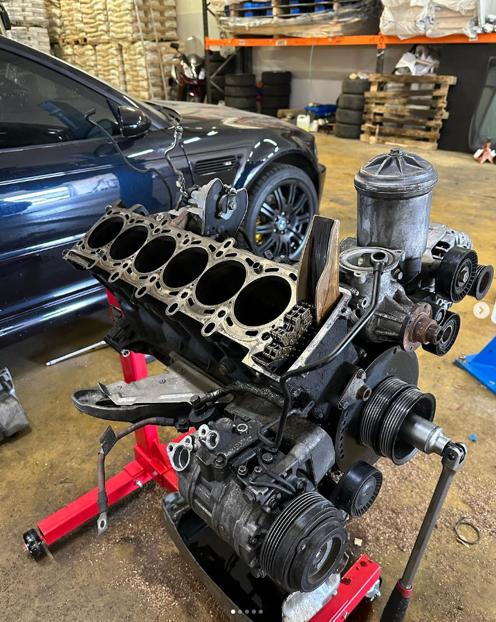
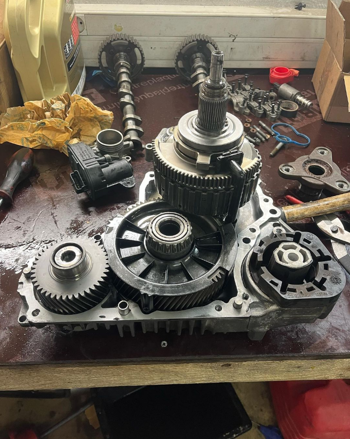

Bienvenue chez BPM Motors !
Nous sommes fiers de vous offrir un service de réparation et d'entretien pour vos véhicules.
Spécialisée principalement dans la mécanique BMW & MINI, notre équipe qualifiée est experte dans l'entretien de ces marques prestigieuses.
Nous sommes déterminés à fournir à nos clients une expérience de conduite sans souci.
Notre Expertise
Notre garage est équipé des dernières technologies et d'outils de diagnostic spécifiques à BMW et Mini,
ce qui nous permet de résoudre rapidement et efficacement tout problème mécanique ou électronique.
Que ce soit pour un simple entretien régulier, une réparation complexe ou une mise à niveau de performance, nous sommes là pour répondre à vos besoins.
Pieces de qualité
Nous utilisons des pièces de rechange de qualité d'origine ou compatibles pour garantir que votre BMW ou Mini continue à fonctionner de manière optimale.
Notre engagement envers la qualité signifie que votre véhicule bénéficie des meilleures pièces disponibles sur le marché.
 Service proposé
Chez BPM Motors, nous vous proposons les services suivants :
- Entretien
- Mechanique
- Reprogrammation
- Pose de pièce performante
Spécialité dans le dommaine
Chez BPM Motors, notre équipe est spécialisée dans les domaines suivants :
- Mécanique interne du moteur.
- Ouverture de boîte de vitesse.
- Électronique du véhicule.
- Amélioration du châssis.
Lorsque vous choisissez BPM Motors, vous optez pour l'excellence en matière de service automobile.